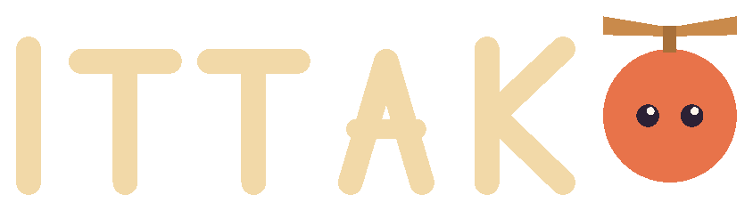

Don’t jump. Get slung.
Grip a spinning arm and let go at the right moment. The arm throws you the way it is travelling, not the way it is pointing — so the strongest launch is not where you expect it. Finding it is the whole game.
 Hawk & Mason
Hawk & Mason

A small toy fell off the bed. It has all night to climb back.
One room, seen from the floor: a carpet that looks like a forest, a desk the size of a cliff, shelves, a curtain, the plastic stars on the ceiling. Above them, where the room ends, the climb does not.


It fell in the dark and nobody saw.
Now the room is a mountain and the night is short.
Above the bed the room ends. The climb doesn’t.
Every shot is the real game: the carpet, the shelves, the bed at 450 metres, and the dream above it.
Grip a spinning arm and let go at the right moment. The arm throws you the way it is travelling, not the way it is pointing — so the strongest launch is not where you expect it. Finding it is the whole game.
A propeller winds up while you hold. Use it to stretch a jump, to slow a fall, or to save a jump you misjudged.
Tap, hold, drag. Portrait, one hand, playable on a bus — and calm enough for a room where someone is already asleep.
A child’s bedroom is enormous when you are the size of a toy. Every layer has its own light — a nightlight, a desk lamp, an aquarium, the moon, the plastic stars — and every layer you reach stays lit in your room, permanently.


The bed waits at 450 m. Above it the room runs out and the climb doesn’t: the Dream Sea, the Moon City, the Dawn Garden — and round again, as far as you can go.

Reach the bed and it throws you back up — the climb goes on as far as you can. Once you have made it, the Star Floor lets you start from the bed.
The same room for everyone, one try a day. The night is generated from the date, so the level you climb is the level everyone else climbs.

No falling. No counter. No record. Just the room. Some nights you don’t want to be measured.
Ittako is a game you buy once. It has no way to take anything else from you — not your money, not your attention, not your data.
No ads. No tracking. Optional Game Center leaderboards. We collect
nothing, and the game plays fully in airplane mode. The one thing
that can leave your device is your height in metres — and only if
you sign in to Apple’s Game Center. Progress lives in one file on
your device.
Accessibility options — longer glide, softer gravity, reduced
shake, an energy bar — are settings, not rewards. Nothing is locked
behind them, and runs made with longer glide or softer gravity are
quietly kept in a separate record.
Read the privacy policy.
Coming to iPhone, iPad and Android. One-time purchase, no ads, no strings.
On the App Store and Google Play as Ittako: Toy Night Climb.
Questions before launch? Support · Privacy Policy
Also from Hawk & Mason Studios